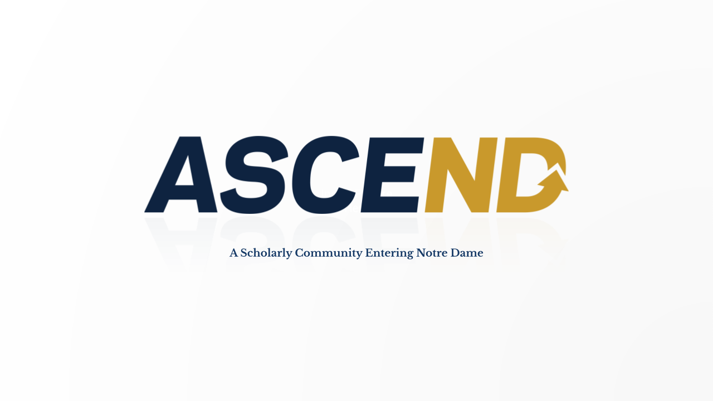

Overview
ASCEND is a summer bridge and mentoring program designed to support incoming students as they transition into university-level mathematics. The program combines mathematical skill-building with near-peer coaching, reflection, study strategies, and community formation.
The goal of ASCEND is not only to help students review algebra, trigonometry, and precalculus skills, but also to help them develop the habits, confidence, and support structures that contribute to long-term success at Notre Dame.
Core Elements
Program Philosophy
ASCEND is built around the idea that mathematical success depends on more than content knowledge alone. Students benefit from community, mentoring, reflective habits, and a clearer understanding of how to study, seek help, and persist through difficulty.
The program emphasizes that students are not entering Notre Dame alone. Through coaches, instructors, and campus partners, ASCEND helps students begin building the academic and social support networks that will sustain them during their first year and beyond.
My Role
I direct ASCEND and work on the design of the program structure, curriculum, coach training, reflective activities, and partnerships with colleges and campus units. The program has grown to serve students across multiple colleges at Notre Dame.